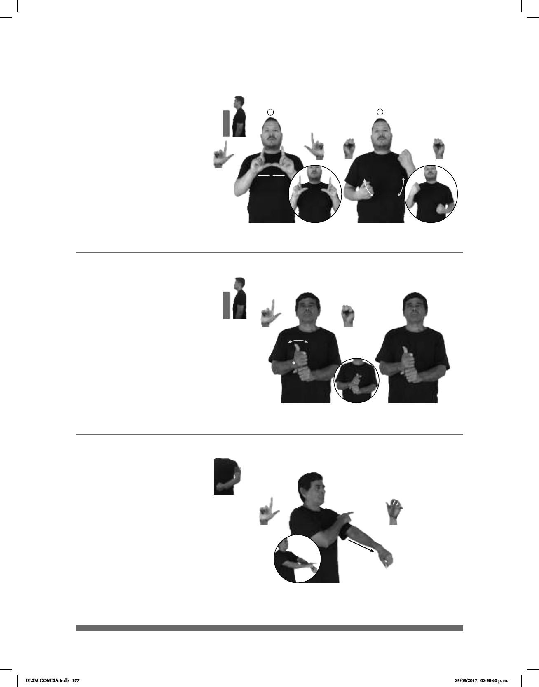

377
(L-111)
Seña: SC: I. SS; II. SB
I. L.1; II. MD y MB
S.1
I. Palmas hacia fuera; II.
MD y MB palmas hacia adentro.
I. A la altura del pecho; II.
MD y MB del pecho al abdomen.
I. Los pulgares se
encuentran y se tocan repetidamente; II.
MD y MB recto alternada y
repetidamente.
sust. f. Documento que
acredita a alguien como capacitado para
conducir un vehículoautomovilístico.
Seña: SB
MD L.1, MB 5.10
MD y MB palmas
hacia abajo.
MD sobre el brazo de
MB. MB a la altura del pecho.
MD recto hacia
enfrente.
sust. f. Tira o banda
elástica que sirve para unir o sujetar
ciertas cosas.
Seña: SB
MD L.1; MB S.1
MD palma hacia la
izquierda, MB palma hacia la derecha.
A la altura del pecho. MD
sobre MB.
El antebrazo hace girar la
mano sin cambiar su orientación.
1. sust. f. Título que otorgan
las instituciones de enseñanza superior a
los alumnos que han terminado una
carrera, cumpliendo así con los requisitos
que los facultan para ejercer su profe-
sión. 2. sust. f. Estudios necesarios para
obtener este grado.
(L-110)
(L-109)
pro-YO FELIZ pos-MI HIJO LICENCIA-DE-CONDUCIR pro-ÉL YA TENER
Estoy feliz, mi hijo ya tiene licencia de conducir.
LICENCIATURA ESTUDIOS #LSM pos-MI HERMANO+MUJER ESTUDIAR
Mi hermana estudia la licenciatura en Estudios de LSM.
AYER pro-YO PERDER pos-MI LIGA
Ayer perdí mi liga.
DLSM COMISA.indb 377 25/09/2017 02:50:40 p. m.